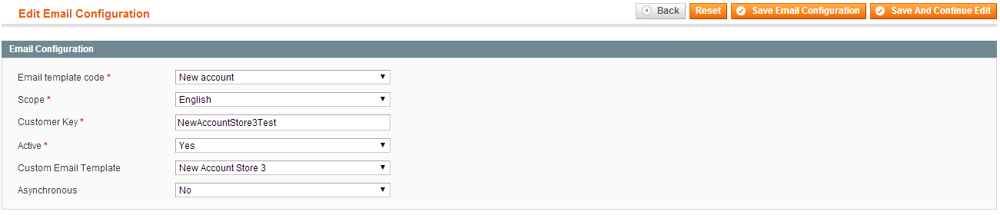

ExactTarget Connect by PrecisionDialogue Configuration
Details for configuring the ExactTarget Connect by PrecisionDialogue Magento module
Welcome the user documentation for configuring the ExactTarget Connect extension for Magento.
These pages will detail the steps required for a standard configuration of the ExactTarget Connect extension for Magento. The extension provides the ability to use ExactTarget to deliver transactional emails from Magento, synchronize customer and transactional data to ExactTarget for use in campaigns and enhance the abandon cart notification functionality.
sent via ExactTarget. For a complete reference on customizing the content of the various email templates, including those used by the abandon cart functionality, see the reference ExactTarget Connect Email Customization.
Table Of Contents
- Overview
- General Configuration
- Email Configuration
- Profile Settings
- Data Extension Settings
- Abandon Cart Settings
- Cron Jobs
- Reports
- Status and Troubleshooting
- Final Steps
Overview
The ExactTarget Connect by Precision Dialogue extension enables the tight integration of Magento sites and ExactTarget. With the extension customer, product, and order details can be used to build campaigns in ExactTarget as the data is synchronized from your Magento environment. In addition you are able to take advantage of the email tracking capabilities of ExactTarget by fulfilling your Magento transactional emails with ExactTarget. Finally, you are able to increase cart conversions by leveraging the email reminder and tracking capabilities of the extensions Abandon Cart reminder functionality.
Because the ExactTarget Connect extension builds on top of Magento transactional emails it is also possible to deeply customize the content of the emails. For full details of how to use the various email templating options available though the extension please see the ExactTarget Connect Email Customization documentation.
General Configuration
Configuration starts with the setting of the ExactTarget specific settings in the extension. You access the settings from the ExactTarget -> Configuration -> General screen.
Prior to the configuration of the extension you need to have certain business rules turned off for your ExactTarget account and/or business unit. Since the transactional emails are rendered in Magento, ExactTarget is unable to guarantee the availability of the required CAN-SPAM compliant values in emails. You must contact ExactTarget support prior to the configuration of the extension to have the CAN-SPAM rules turned off. The specific validations are physical address and unsubscription link.
The first option, Integration Enabled controls if the ExactTarget integration is enabled for the selected configuration scope. This setting should be the last one set for any given configuration as it is essential that all other settings are properly configured before enabling the integration. By enabling the integration we are turning on the functionality of the extension to potentially synchronize customer information, send transactional emails, synchronize detailed store and order data, and send abandoned cart email notification
For the API Username setting enter the login name of the ExactTarget account that has API privileges and access to the ExactTarget business unit(s) that will be linked to the Magento instance.
For the API Password setting enter the password for the login name entered above.
The API URL setting is used to denote which ExactTarget server instance your account is on. To determine which instance you are on see: Accessing the ExactTarget Application.
The ExactTarget Account Type setting should be set to the correct account type of your ExactTarget subscription. The availability of some of the other configuration options depends on the type of account you have. Enterprise 2.0 accounts have the largest number of additional options.
The Use CURL for API Calls setting determines specific low level ExactTarget API interactions. If it is set to Yes then libcurl will be used for many API calls.
The Member ID setting is for Enterprise 2.0 accounts. The value is the MID of the ExactTarget business unit that is integrated into the selected configuration scope.
The Subscriber Field Name setting controls the relationship between sendable data extensions and subscribers. The choice should be set depending on what your email address/subscriber key relationship is in ExactTarget. The two choices are Email Address and Subscriber Key.
The ET Email From Name and ET Email From Email Address settings control the displayed from name and email address of all transactional emails fulfilled through ExactTarget.
The Debug Mode setting controls the logging level of the extension. When the extension is in debug mode a detailed record of ExactTarget API calls and results plus actions taken by the extension are recorded in log files for analysis during a support incident. Debug mode imposes a significant run time penalty on the system and should only be enabled when actively troubleshooting issues.
The Newsletter Email List ID setting will only have valid selections after a valid set of ExactTarget credentials are entered in the API Username, API Password and API URL settings. All of the lists for the account will then be displayed and customers who subscribe to the newsletter will be added to the selected list. This functionality allows the composition and fulfilment of newsletter emails in ExactTarget.
The Data extensions limit to send for each cron instance setting controls the maximum number rows of data to synchronize with ExactTarget when the data extension synchronisation cron job executes. This setting allows for the balance between the rate of change of Magento data and the cron interval. Setting a larger value will better support a system with a high rate of data updates (customer, products, orders).
The Run Initial Setup button requires setting and saving all other configuration settings prior to running. This will execute a routine that will perform the initial creation of all ExactTarget objects required to support the configuration (emails, data extensions, triggered send interactions, etc.). If correctly structured objects already exist in ExactTarget then the object will not be modified.
Email Configuration
The ExactTarget Connect extension for Magento improves the deliverability of your transactional emails by allowing you to configure transactional emails to be sent with ExactTarget. In addition you are able to take advantage of the rich set of ExactTarget features to improve your email interactions with your customers including detailed send reporting, open and click tracking, subscription management and the ability to take advantage of the rich set of templating features in ExactTarget. Configuration of transactional email sending is in the ExactTarget -> Configuration -> Email screen.
In order for a transactional email to be sent with ExactTarget you must first create a configuration in the extension for each transactional email you wish to send with ExactTarget. Transactional emails that are not configured in the extension will be sent using the Magento core email configuration

Creating an email configuration entry requires creating a configuration for each transactional email that is to be sent with ExactTarget. The Email template code setting is the transactional email template that is going to be sent with ExactTarget.
In a multi website and/or store environment the Scope setting determines the scope of the emails that will be sent with ExactTarget. If you are working in an environment with different templates for websites/stores you will need an email configuration entry for each scope that will use ExactTarget.
The Customer Key setting determines the base ExactTarget customer key that will be used for the ExactTarget objects that support the integration (email definition, data extension and triggered send interaction). It is recommended that you use the same customer key value for the same email template values in a multi website/store environment.
The Active setting determines if the configured transactional email will be sent using ExactTarget. If the value is No then the transactional email will be sent using the Magento core email configuration.
The Custom Email Template setting allows you to specify which custom email template will be rendered and sent for the selected email and scope. This setting is to support the use of custom templates for unique website/store branding within the Magento template rendering engine.
The Asynchronous setting determines if the transactional email is sent through ExactTarget as soon as it is triggered or if it is placed on a queue for later sending. If the setting is Yes then the email will be queued in Magento and not sent to ExactTarget until the next execution of the Send asynchronous emails cron job.
The default behaviour of the ExactTarget Connect extension is to use only the Magento templating engine when rendering transactional emails and to send the full text of the email as a single value to ExactTarget. It is possible to further customize the email definition in ExactTarget. For details please see the ExactTarget Connect Email Customization documentation.
Profile Settings
The ExactTarget Connect extension provides the ability to update ExactTarget subscriber attributes with Customer and Customer Address attributes. The selection and configuration of which customer attributes are sent to ExactTarget is performed in the ExactTarget -> Configuration -> Profile Field screen.
Virtually any customer or customer address attribute can be synchronized to an ExactTarget Subscriber attribute. Having Magento customer attributes as subscriber attributes in ExactTarget allows you to perform personalization of your email messages using customer data from Magento as well as using those attributes to build campaigns. To add a new profile field mapping click the New Profile Field button and configure the attribute options.
The Field Name in ExactTarget setting is the name of the ExactTarget subscriber attribute that will be created/populated with the customer data.
The Attribute Type in ExactTarget setting indicates the data type to be used for the ExactTarget attribute.
The Entity Type selector determines the object type whose attribute is to be mapped to the ExactTarget subscriber attribute.
The Customer Attributes is the object attribute (Customer or Customer Address) that is to be mapped to the ExactTarget subscriber attribute.
The Scope setting is the website/store scope used for the entity attributes.
The Active setting controls if the entity attribute mapping is active or not. Only active profile field data is sent to ExactTarget.
Data Extension Settings
The ExactTarget Connect extension provides you with the ability to send detailed Magento entity data to ExactTarget data extensions. This data can then be used for additional email personalization, building campaigns, data analysis or building complex custom content using AMPScript. The configuration required to send Magneto object data to ExactTarget data extensions is under ExactTarget -> Configuration -> Data Extension.
With data extension mapping the extension will maintain detailed duplicate Magento data in ExactTarget. You can synchronize customer, product and order information to ExactTarget. To create a new mapping click the New data extension configuration button.
Configuring a data extension mapping requires configuring both some general information about the mapping as well as details about the specific fields that are to be synchronized.
Name is the name of the ExactTarget data extension that will hold the Magento data.
Description is the descriptive text of the ExactTarget data extension.
The Related Entity setting determines the Magento object type that will be synchronized to ExactTarget. Currently you can synchronize Customer, Product, Related Products, Order, Order Address and Order Item data from Magento.
The Scope setting controls the website/store scope of the data mapping.
The Customer Key setting is the ExactTarget customer key for the data extension.
The Active setting controls if the data mapping is enabled or not. Only active mappings will synchronize Magento data to ExactTarget.
The Is Sendable setting controls if the ExactTarget data extension is a sendable data extension. This option is only valid to be set for Magento objects that have an email address field.
The list of fields that are configured to synchronize to the ExactTarget data extension is specified in the Fields tab of the data extension mapping configuration screen. New fields can be added by clicking the Add Field button, existing field mappings can be modified by selecting the Edit option of the field row and a field mapping can be removed by selecting the Delete option of the field row.
There are a number of specific options that need to be set correctly for the fields to be synchronized to ExactTarget.
Name is the name of the ExactTarget data extension field that will hold the Magento data.
Is Primary indicates if this field is a part of the primary key for the data extension. All fields with an Is Primary setting of Yes will be a part of the primary key of the data extension.
The Is Required setting indicates if the data extension field is required to have a value or if it is optional.
The Is Sendable Field is an indicator that the selected field is an email or subscriber key and is used in a sendable data extension as the email destination. This setting is only valid to be set to Yes for a sendable data extension.
The Entity Type setting is the Magento entity type that is mapped to the current ExactTarget data extension field.
The Attribute setting is the actual Magento entity attribute that is mapped to the current ExactTarget data extension field.
The Default Value setting allows you to specify the default value for the ExactTarget data extension field.
The Active setting controls if the selected field is going to be synchronized from Magento to ExactTarget.
The Attribute Type in ExactTarget setting specifies the ExactTarget data type of the data extension field. The selected type should be compatible with the Magento data type or else there will be synchronization errors that will halt the data synchronization process. For email address fields that are sendable the data type should be EmailAddress.
AbandonCart Settings
The ExactTarget Connect by Precision Dialogue extension enables the fulfilment of abandoned cart transactional emails by ExactTarget when triggered by a custom Magento cron task. There are a variety of options that can be set to contol the timing and frequency of the emails as well as a way to provide custom incentives to convert abandoned carts into sales.
Full details of the configuration options are available in the ExactTarget Connect by PrecisionDialogue Abandon Cart Configuration documentation.
Status and Troubleshooting
{kind=link}
{kind=link}
{kind=link}
{kind=link}
{kind=link}
{kind=link}
{kind=link}
{kind=link}
{kind=link}